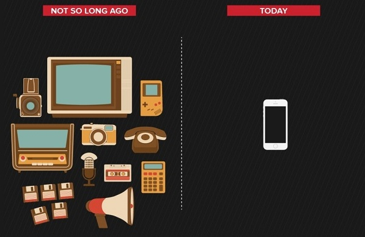

WORLD WIDE TECH
Introduction
La technologie est l’élaboration et le perfectionnement des méthodes
permettant l’utilisation efficace des techniques diverses prises isolément,
en groupe ou dans leur ensemble - qu’il s’agisse de techniques ou mécaniques,
physiques ou intellectuelles - en vue d’assurer le fonctionnement des mécanismes
de la production, de la consommation, de l’information, de la communication,
des loisirs, de la construction et de la destruction, ainsi que des activités de
la recherche artistique et scientifique.
Il existe trois type de technologies :
- Une technologie instrumentale
- se développe depuis 3 millions d’années, Elle va des outils les plus simples jusqu’aux microprocesseurs.

- Une technologie sociale
- Elle se manifeste par l’insertion d’idées ou d’objets dans le circuit social, sur les plans financiers, industriels et politiques, par l’intermédiaire de ceux qui représentent les différents secteurs et les différents groupes de pression.
- Une technologie économique
- qui concerne les principes et les techniques de rentabilisation des investissements, ainsi que les études théoriques et leur mise au point pratique par des techniciens à la disposition des décideurs.

 Retour au TOP
Retour au TOP